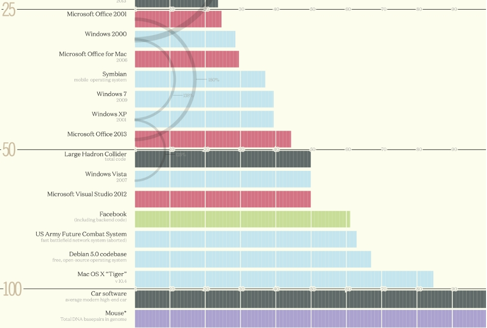
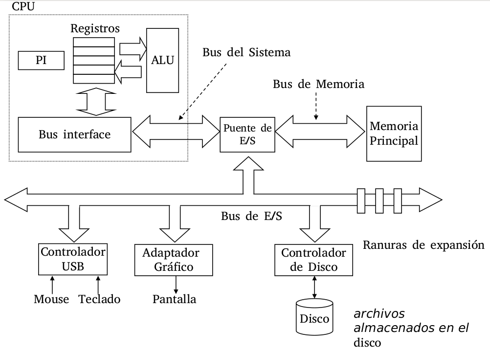
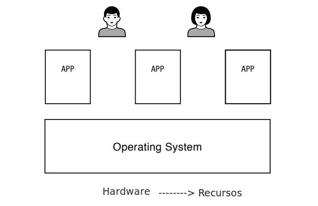
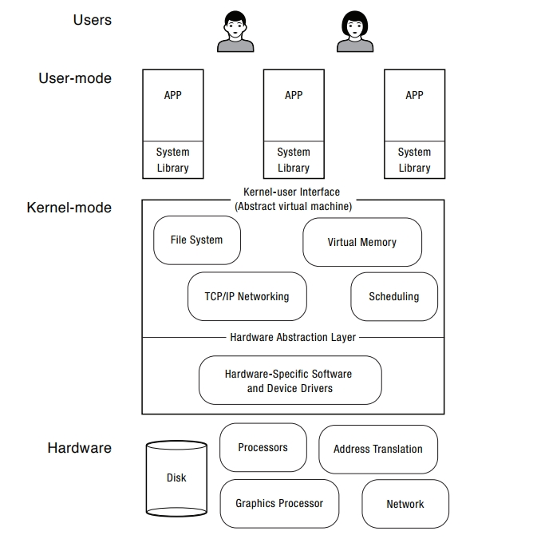
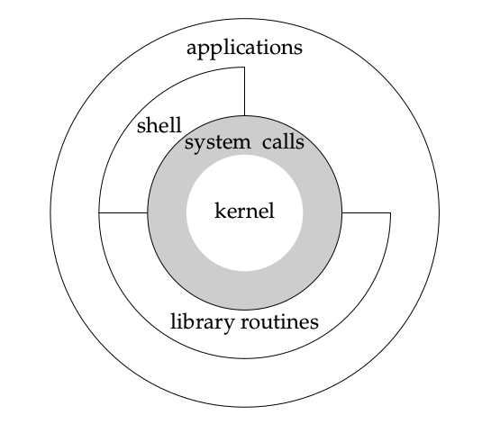

Primero, es lo primero … lo administrativo las Materias Correlativas y la bibliografía y los medios de comunicación.
Sistemas Operativos
Conceptualmente en el seno de las Ciencias de la Computación lo Sistemas Operativos ocupan un lugar destacado.
Por un lado, porque los conceptos que se manejan en el ámbito de un sistema operativo estan categorizados cómo algunos de los más complejos en la informática.
Para tener una idea, un Sistema Operativo moderno está compuesto por unas 50 millones de lineas de código fuente.

Alguien en este momento está escribiendo algunas lineas de código para algún sistema operativo que necesariamente no tiene que ser para una PC.
Por otro lado, los conceptos manejados en los sitemas operativos están dentro de la gama de los más utilizados en las Ciencias de la Computación y de hecho, muchos de elllos les van a parecer familiares y de la vida cotidiana:
- Tratar de hacer dos cosas al mismo tiempo.
- Haberse equivocado de cola en el supermenrcado.
- Tratar de que tu hermano, con el cual compartis la habitacion, no se meta con tus cosas.
entre otras.
Una Computadora
Puede parecer casi trivial pero para poder dominar los conceptos que se manejan en sistemas operativos se debe terner bien en claro:¿ Qué es una Computadora? y además, Cuales son sus partes:

Las partes esenciales como todos sabemos …. son :
- CPU: Central Process Unit.
- Main Memory: Memoria Principal.
- Devices: Dispositivos de Entrada o Salida.
- Buses: conexiones.
(ver: BRY Chap:1 pag:8)
¿Qué es un Sistema Operativo?
Un Sistema Operativo (OS) es la capa de software que maneja los recursos de una computadora para sus usuarios y sus aplicaciones. [DAH]

otra definición dada por [STV] :
Un Sistema Operativo puede definirse como el software que controla los recursos de hardware de una computadora y provee un ambiente bajo el cual los** programas pueden ejecutarse**.
Normalmente los sistemas oprativos son invisibles a los ojos de sus usuarios, por ejemplo alguien le prestó atención al sistema operativo de:
- Una consola de videojuegos
- Un teléfono
- Un coche
- Un avion
- Una Heladera
- Un karaoke
- Una cámara de fotos
De todas formas en este curso se estudiará a fondo a los sistema operativos de propósito general, muchos de uds. ya han interactuado con alguno como por ejemplo Linux, Mac OS o Windows.
Hoy en día cualquier persona que utilice una computadora debe lidiar, aun inconscientemente, con un sistema operativo.
En un sistema operativo de proposito general, los los usuario interactuan con aplicaciones, estas aplicaciones se ejecutan en un ambientenque es proporcionado por el sistema operativo. A su vez el sistema operativo hace de mediador para tener acceso al hardware del equipo.
¿Cómo hacen los Sistemas Operativos para ejecutar múltiples aplicaciones?
Esta es una pregunta que muchos estudiantes alguna vez se han planteado y es menester de este curso ofrecer la respuesta.
Por lo pronto se puede decir que un sistema operativo juega simultaneamente tres roles según DAH:
-
Referre: Un OS gestiona recursos compartidos compartidos entre diferentes aplicaciones, que se encuentran ejecutśndose en la misma máquina física. Por ejemplo, un OS puede frenar la ejecución de una aplicacion e iniciar la ejecución de otra. Los OS aislan a cada aplicación de las demás que se encuentran corriendo en la misma computadora. Por ende un OS tiene que protegerse a sí mismo y a las demas aplicaciones que se están ejecutando en la misma computadora. Y dado que todas estas aplicaciones comparten los mismos recursos físicos el OS decide que aplicación usa un determinado recurso y cuando.
-
Ilucionista: Un OS debe proveer una abstracción del hardware para simplificar el diseño de aplicaciones. Imaginen lo complejo que sería escribir el clásico hola mundo no se tiene que pensar en que lugar de la memoria fisica este se encuentra almacenado, ni como esta memoria se comparte con otros datos y aplicaciones. El sistema operativo provee la ilusión de que se dispone de toda la menoria para almacenar al programa, cuando realmente se sabe que la memoria ppal de la computadora es finita.
-
Pegamento: Un OS debe proveer una serie de servivios comunes que faciliten un mecanismo que permita compartir, por ejemplo, informción entre las aplicaciones…. “Cut & Paste” por ejemplo … este mecanismo es uniforme en todo el sistema. Otro ejemplo es el “look and feel” de la interfaz de usuario. Tal vez uno de los maás importantes sea el mecanismo de acceso a los dispositivos de entrada y salida del sistema, de forma tal que las aplicaciones puedan usarlos independientemente de la marca y modelo de los mismos.

-
En el más bajo nivel se encuentra el hardware o recursos de la máquina: CPU, memoria principla, dispositivos de res, dispositivos gráficos, dispositivos de almacenamiento, etc.
El hardware provee primitivas que el sistema operativo puede utilizar para aislar fallas y para sincronización. -
El Sistema Operativo se ejecuta como la capa de software de más bajo nivelen la computadora. Este contiene por un lado una capa para la gestión de dispositivos específico y por otro una serie de servicios para la gestión de dispositivos agnosticos del hardware que son utilizados por las aplicaciones. Estas dos capas suelen ser conocidad como el kernel del sistema operativo. Cuando código fuente de esta capa es ejecutado la computadora pasa a un estado llamado Modo Supervisor.
-
Las aplicaciones se ejecutan en un contexto aislado, protejido y restrinjido y mediante el uso de funciones que se encuentran bibliotecas pueden utilizar los servicios de acceso al hardware o recursos que el kernel proporciona. El contexto de ejecución de las aplicaciones se denomina User Mode o modo usuario, mas restrictivo, aislado y controlado.
El Kernel
El Kernel es entonce la capa de software de más bajo nivelen la computadora. Este contiene por un lado una capa para la gestión de dispositivos específico y por otro una serie de servicios para la gestión de dispositivos agnosticos del hardware que son utilizados por las aplicaciones.
Estas dos capas suelen ser conocidad como el kernel del sistema operativo. Cuando código fuente de esta capa es ejecutado la computadora pasa a un estado llamado Modo Supervisor.
Un Sistema Operativo puede definirse como el software que controla los recursos de hardware de una computadora y provee un ambiente bajo el cual los programas pueden ejecutarse. Habitualmente a este software se lo llama el Kernel.


Otras veces se puede encontrar el termino Kernel utilizado cuando se hacer redferencia a todo el sistema operativo.
El kernel se ocupa de :
- Gestionar la Memoria
- Planificar la ejecución de las aplicaciones
- proveer un sistema de archivos
- Creación y finalización de procesos
- Acceder a los dispositivos
- Comunicaciones
- Proveer un API
Iniciar al Sistema Operativo y el Kernel
El kernel es la capa de software de más bajo nivelen la computadora. Este contiene por un lado una capa para la gestión de dispositivos específicos y por otro una serie de servicios para la gestión de dispositivos agnosticos del hardware que son utilizados por las aplicaciones.
Estas dos capas suelen ser conocidad como el kernel del sistema operativo. Cuando código fuente de esta capa es ejecutado la computadora pasa a un estado llamado Modo Supervisor.
El proceso de inicio de una computadora se divide esencialmente en 3 partes:
-
Booteo: este proceso es denominado bootstrap, y generalmente depende del hardware de la computadora. En el se realizan los chequeos de hardware y se carga el bootloader, que es el programa encargado de cargar el Kernel del Sistema Operativo.
- Carga del Kernel: el BootLoader por el momento de forma más o menos transparente es un programa que se encarga de :
- Pasar a Modo Supervisor, esto es posible porque se realiza por hardware
- Ir a buscar el kernel al dispositivo donde se encuentra almacenado, normalmente un disco (pero puede ser un pendrive,la red, un CD).
- Lo carga en la memoria prcipal
- Setear el registro de PI (Proxima Instruccion)
-
Ejecutar la primer intrucción del kernel
- Inicio de las Aplicaciones de usuarios: Una vez que el Kernel terminó de ejecutarse, las últimas operaciones que realiza son:
- Cargar en memoria la aplicación que se debe ejecutar, normalmente este programa es el shell.
- setear el PI en la primera instrucción de esta aplicación
- Pasar a modo Usuario y dejar el control a la aplicación.
En la realidad lo que sucede es:
Fase de carga del kernel
El kernel es cargado normalmente como un archivo imagen, comprimido dentro de otro con zlib como zImage o bzImage, esto quiere decir que no es un archivo ejecutable normal, se encuentra comprimido en ese formato.
Contiene una cabecera de programa que hace una cantidad mínima de instalación del hardware, descomprime la imagen completamente en la memoria alta, teniendo en cuenta cualquier disco RAM si está configurado (/boot/initrd-2.6.14.2.img).
A continuación, lleva a cabo su ejecución. Esto se realiza llamando la función startup del kernel (en los procesadores x86 a través de la función startup_32() del archivo /arch/i386/boot/head).
Fase de inicio del kernel
La función de arranque para el kernel (también llamado intercambiador o proceso 0) establece la gestión de memoria (tablas de paginación y paginación de memoria), detecta el tipo de CPU y cualquier funcionalidad adicional como capacidades de punto flotante, y después cambia a las funcionalidades del kernel para arquitectura no específicas de Linux, a través de una llamada a la función start_kernel().
start_kernel() ejecuta una amplia gama de funciones de inicialización:
- Establece el manejo de interrupciones (IRQ)
- configura memoria adicional
- comienza el proceso de inicialización (procesa el espacio del primer usuario y luego comienza la tarea inactiva a través de cpu_idle().
En particular, el proceso de inicio del kernel también monta el disco RAM inicial (“initrd”) que se ha cargado anteriormente como el sistema raíz temporal durante la fase de arranque.
Esto permite que los módulos controladores se carguen sin depender de otros dispositivos físicos y drivers y mantiene el kernel más pequeño.
El sistema de archivos raíz es cambiado más tarde a través de la llamada a pivot_root(), que desmonta el sistema de archivos temporal y lo reemplaza por el real una vez que éste sea accesible. La memoria utilizada por el sistema de archivos temporal es entonces recuperada.
Por lo tanto, el núcleo inicializa los dispositivos, monta el sistema de archivos raíz especificado por el gestor de arranque como de sólo lectura, y se ejecuta Init (/sbin/init), que es designado como el primer proceso ejecutado por el sistema (PID=1). También puede ejecutar opcionalmente initrd para permitir instalar y cargar dispositivos relacionados (disco RAM o similar), para ser manipulados antes de que el sistema de archivos raíz está montado.
En este punto, con las interrupciones habilitadas, el programador puede tomar el control de la gestión general del sistema, para proporcionar multitarea preventiva, e iniciar el proceso para continuar con la carga del entorno de usuario en el espacio de usuario.
El proceso de inicio
El trabajo de Init es “conseguir que todo funcione como debe ser” una vez que el kernel está totalmente en funcionamiento. En esencia, establece y opera todo el espacio de usuario. Esto incluye:
- la comprobación y montaje de sistemas de archivos
- la puesta en marcha los servicios de usuario necesarios y, en última instancia, cambiar al entorno de usuario cuando el inicio del sistema se ha completado.
Es similar a los procesos Init de Unix y BSD, de la que deriva, pero en algunos casos se ha apartado o se hicieron a la medida.
En un sistema Linux estándar, Init se ejecuta con un parámetro, conocido como nivel de ejecución, que tiene un valor entre 1 y 6, y que determina que subsistemas pueden ser operacionales. Cada nivel de ejecución tiene sus propios scripts que codifican los diferentes procesos involucrados en la creación o salida del nivel de ejecución determinado, y son estas secuencias de comandos los necesarios en el proceso de arranque. Los scripts de Init se localizan normalmente en directorios con nombres como “/etc/rc…”. El archivo de configuración de más alto nivel para Init es /etc/inittab.
Durante el arranque del sistema, se verifica si existe un nivel de ejecución predeterminado en el archivo /etc/inittab, si no, se debe introducir por medio de la consola del sistema. Después se procede a ejecutar todos los scripts relativos al nivel de ejecución especificado.
Después de que se han dado lugar todos los procesos especificados, Init se aletarga, y espera a que uno de estos tres eventos sucedan:
- que procesos comenzados finalicen o mueran;
- un fallo de la señal de potencia (energía);
- o una petición a través de /sbin/telinit para cambiar el nivel de ejecución.
Habitualmente en una instalacion descktop se ejecuta comunmente /sbin/init
Arquitectura x386
Hacia 1971 Intel lanza al mercado lo que fue posteriormente conocido como el primer microprocesador de la historia, el Intel 4004. El procesador, un microcontrolador con un procesador programable de 4 bits, podía direccionar 4096 direcciones de memoria de 4 bits y tenía un set de 45 instrucciones. En ese año Intel marcó un hito en la era de las computadoras y de la electrónica en general. El 4004 se dejó de producir cuando Intel lanzó a la venta el Intel 4040, que operaba a una velocidad superior.
Hacia fines de los años 70, Intel vio que su producto tenía futuro comercial, por ello lanzó el procesador denominado 8008 que era la versión de 8 bits del 4004. El procesador tenía más memoria (16 KB) y se le había ampliado el set de operaciones a 48.
A fin de 1973, Intel lanza un procesador que se convirtiría en el más conocido de todos los tiempos (opinión del autor): el Intel 8080. A partir de allí, comienza la carrera de desarrollo de hardware más intensa e importante de la historia.
| CPU | Serie | Code Name | Production | Clock Speed | Socket | Litho | Cores | Bus | L1 | L2 | L3 |
|---|---|---|---|---|---|---|---|---|---|---|---|
| 4004 | Nov. 15, 1971 | 108 kHz | DIP | 10-micron | 1 | 108 kHz | N/A | N/A | N/A | ||
| 8080 | N/A | N/A | April 1972 | 200 kHz | DIP | 10-micron | 1 | 200 kHz | N/A | N/A | N/A |
| 8080 | N/A | N/A | April 1974 | 2 MHz | DIP | 6-micron | 1 | 2 MHz | N/A | N/A | N/A |
| 8085 | N/A | N/A | March 1976 | 2 MHz | DIP | 3-micron | 1 | 2 MHz | N/A | N/A | N/A |
| 8086 | N/A | N/A | June 8, 1978 | 10 MHz, 8 MHz, 4.77 MHz | DIP | 3-micron | 1 | 10 MHz, 8 MHz, 4.77 MHz | N/A | N/A | N/A |
| 8088 | N/A | N/A | June 1979 | 8 MHz, 4.77 MHz | DIP | 3-micron | 1 | 8 MHz, 4.77 MHz | N/A | N/A | N/A |
| 80286 | N/A | N/A | Feb. 1982 | 12 MHz, 10 MHz, 6 MHz | DLPP | 1.5-micron | 1 | 12 MHz, 10 MHz, 6 MHz | N/A | N/A | N/A |
| i80386 | DX, SX, SL | N/A | 1985 - 1990 | 33 MHz,5 MHz,20 MHz,16 MHz | DLPP | 1 - 1.5-micron | 1 | 33 MHz, 25 MHz,20 MHz, 16 MHz | N/A | N/A | N/A |
| i80486 | DX, SX, DX2, DX4, SL | N/A | 1989 - 1992 | 25 MHz - 100 MHz | Socket 1, Socket 2, Socket 3 | 1 - 0.6-micron | 1 | 25 MHz - 50 MHz | N/A | N/A | N/A |
| Intel Pentium | N/A | P5, P54C, P54CTB, P54CS | 1993 - 1999 | 65 MHz - 250 MHz | Socket 2, Socket 3, Socket 4, Socket 5, Socket 7 | 800 nm - 350 nm | Unknown | 1 50 MHz - 66 MHz | 16 KiB | N/A | N/A |